Appendices
Appendix A: Evaluation Board wiring and stand
 Figure A.1: Evaluation Board
Figure A.1: Evaluation Board
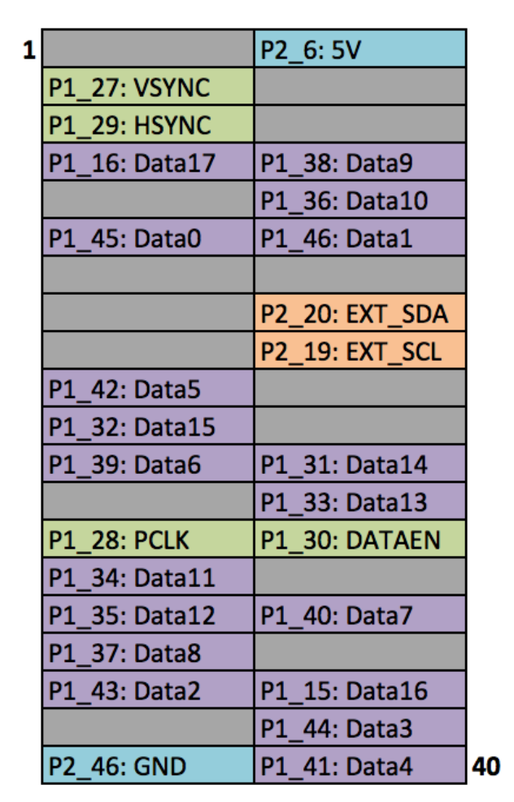
Figure A.2: Raspberry Pi's GPIO
Images reproduced from Frederick Vandenbosch DLP, LightCrafter Display 2000 EVM on Raspberry Pi [25].
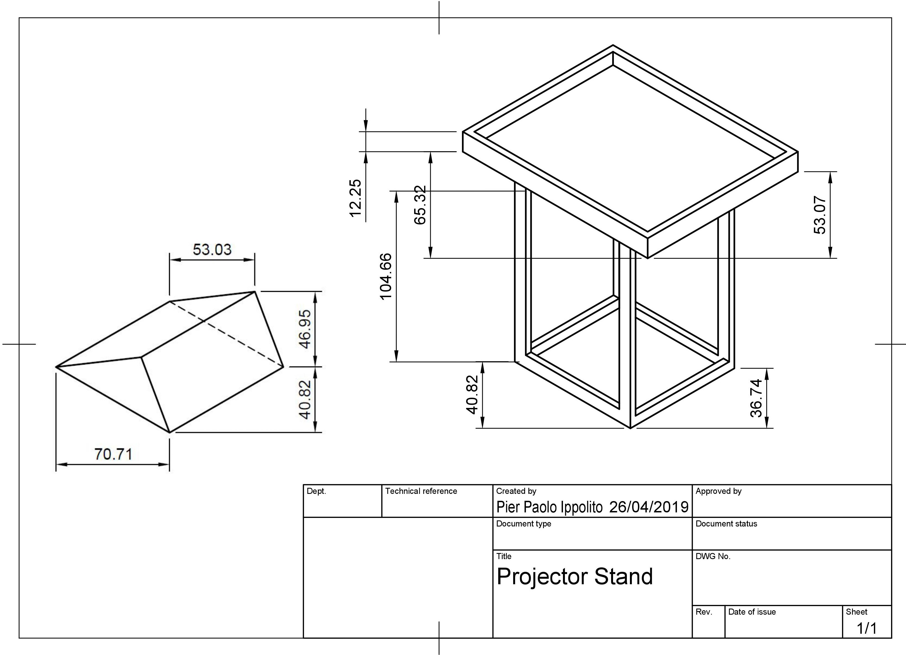Figure A.3: Projector stand design made using Fusion 360
Appendix B: Listings
In Listing 1 has been chosen a period of 30 seconds and 20 channels.
[ret, intletEEG] = MatNICEEGConnectLSL('NIC')
[ret, eeg_set, timestamp_set] = MatNICEEGRecordLSL(30, 20,intletEEG)
csvwrite('output-gameplay.csv',eeg_set)
Listing 1: MATLAB code setupscript3.m
import matlab.engine
from threading import Thread
# EEG readings pre-game and set-up
eng = matlab.engine.start_matlab()
eng.addpath(r'path_to_file', nargout=0)
tf = eng.setupscript(nargout=0)
print(tf)
# Defining threading function to get and store eeg data while playing
def eeg_func():
# EEG readings during-game
eng = matlab.engine.start_matlab()
eng.addpath(r'path_to_file', nargout=0)
tf3 = eng.setupscript3(nargout=0)
print(tf3)
Thread(target = eeg_func).start()
Listing 2: Python code added to enable EEG readings synchronisation
trainedtree = tree.DecisionTreeClassifier().fit(X_Train, Y_Train)
predictionstree = trainedtree.predict(X_Test)
print(confusion_matrix(Y_Test,predictionstree))
print(classification_report(Y_Test,predictionstree))
Listing 3: Decision Tree Code
segments = []
for i in range(0, len(df) - N_TIME_STEPS, step):
ch = []
for j in range(0, N_FEATURES):
ch.append(df.iloc[:, j].values[i: i + N_TIME_STEPS])
segments.append(ch)
labels = []
for i in range(0, len(df) - N_TIME_STEPS, step):
label = stats.mode(df['Label'][i: i + N_TIME_STEPS])[0][0]
labels.append(label)
labelsl = np.asarray(pd.get_dummies(labels), dtype = np.float32)
reshaped_segments = np.asarray(segments,
dtype= np.float32).reshape(-1,
N_TIME_STEPS,
N_FEATURES)
X_train, X_test, y_train, y_test = train_test_split(
reshaped_segments, labelsl, test_size=0.2, random_state=RANDOM_SEED)
Listing 4: LSTM Pre-processing
model_json = model.to_json()
with open("model.json", "w") as json_file:
json_file.write(model_json)
model.save_weights("model.h5")
Listing 5: Storing CNN Model
Appendix C: ML MATLAB Analysis
Plot of all the channels voltages registered for all the time-steps (repetition number one) in Happy Data, Typical Child number 1.
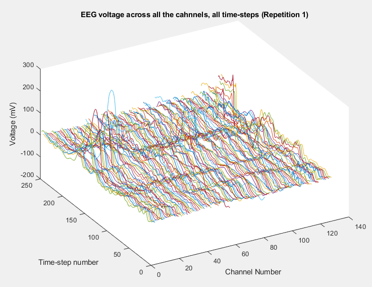Figure C.1: EEG voltage across all the channels, all time-steps (Repetition 1), Happy Data, TYP1
Plot of all the channels voltages registered for all the time-steps (repetition number one) in Happy Data, ASD Child number 1.
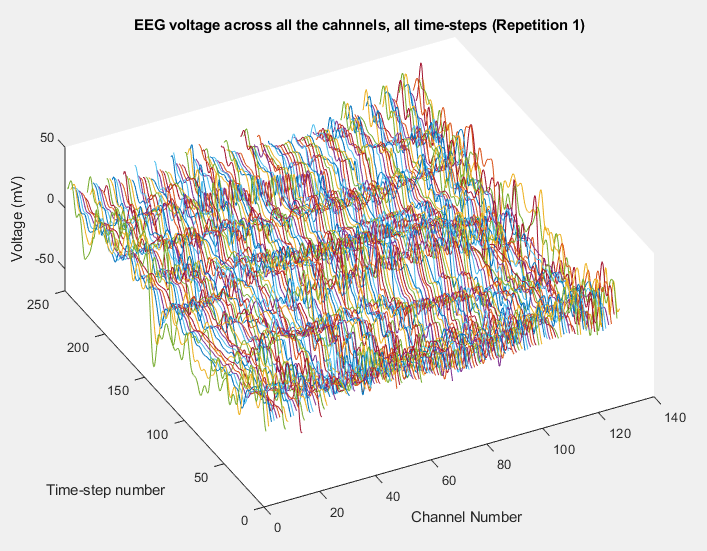Figure C.2: EEG voltage across all the channels, all time-steps (Repetition 1), Happy Data, ASD1
Plots of the channel number against the voltage amplitude of EEG brainwaves for the first typical child (on the left side) and the first ASD child (on the right side), this is done for all the 5 stimuli and for their corresponded experiment repetitions number 1 (left side of each plot) and 35 (right side of each plot). All the channels, all the time-steps and just one repetition is considered for each graph.
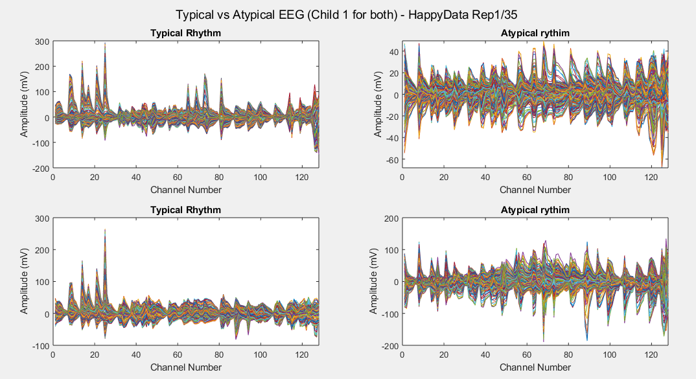Figure C.3: Happy Data Stimulus
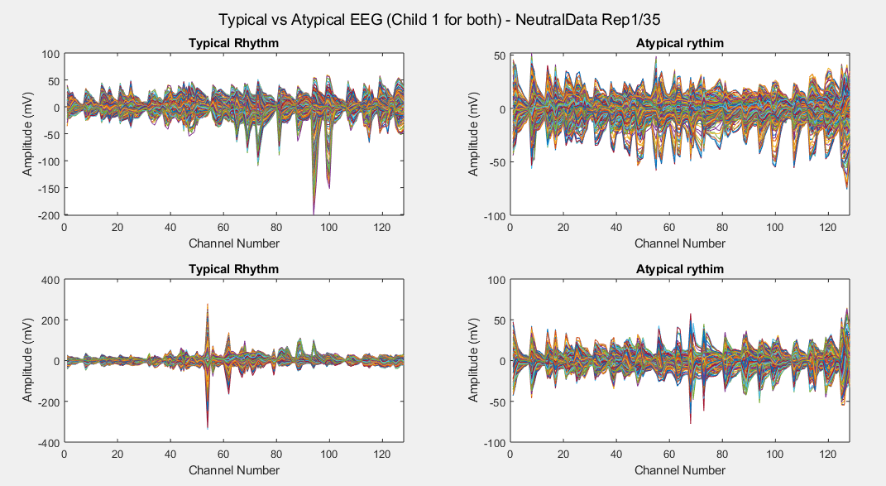Figure C.4: Neutral Data Stimulus
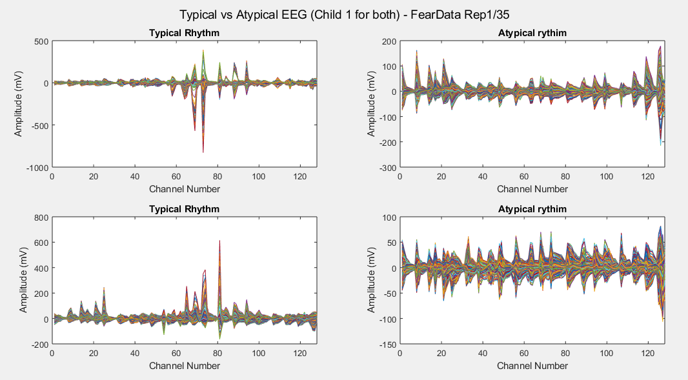Figure C.5: Fear Data Stimulus
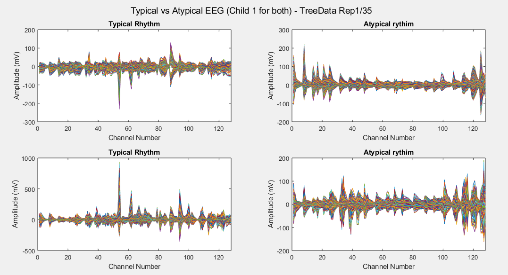Figure C.6: Tree Data Stimulus
 Figure C.7: Cartoon Data Stimulus
Figure C.7: Cartoon Data Stimulus
Considering just channel number 1, all the time-steps and just one repetition (Repetition number 1 on the left and repetition number 35 on the right of each plot), the following results can be obtained:
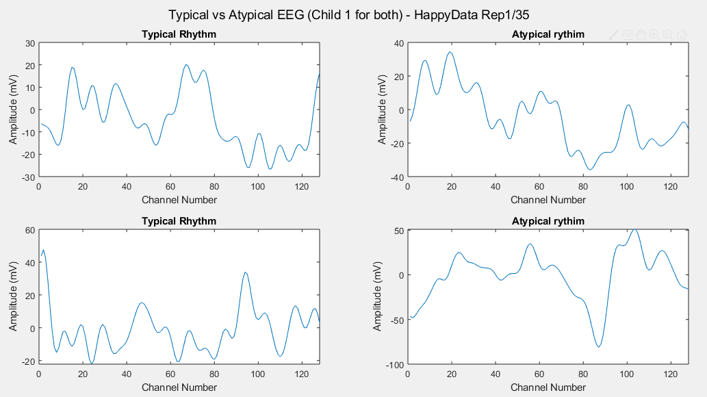Figure C.8: Happy Data Stimulus
 Figure C.9: Neutral Data Stimulus
Figure C.9: Neutral Data Stimulus
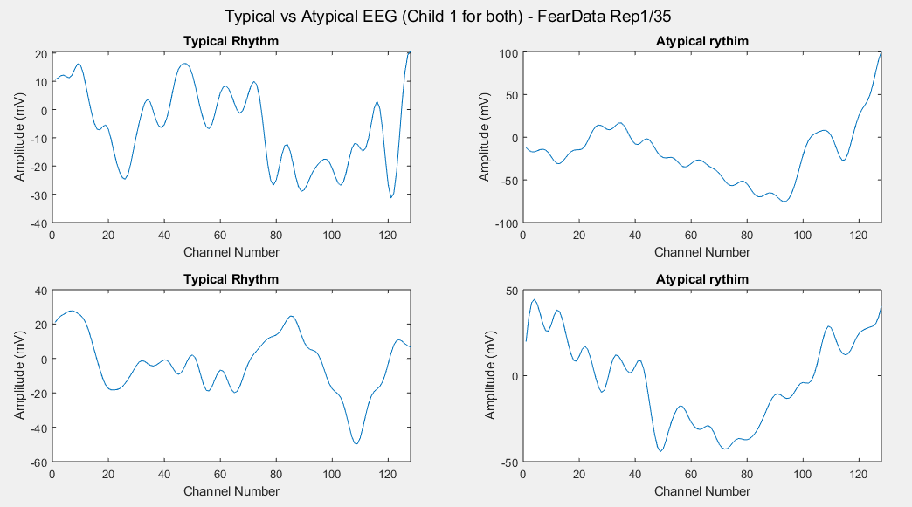Figure C.10: Fear Data Stimulus
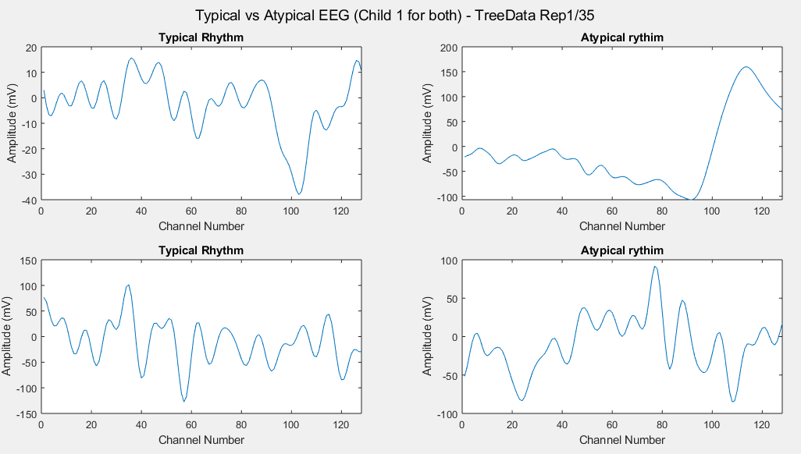Figure C.11: Tree Data Stimulus
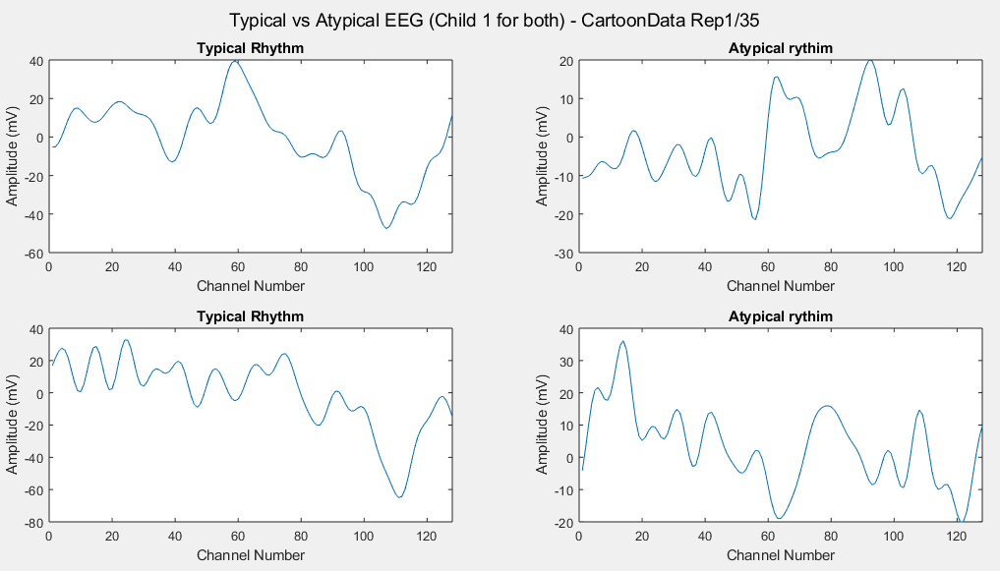Figure C.12: Cartoon Data Stimulus
Appendix D: Individual Stimulus Data-sets Results
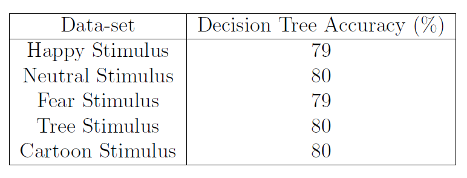
Table 1: Decision Tree accuracy for Individual Stimulus Data-sets
For the LSTM because of the reduced amount of data when working with the individual stimulus, has been chosen a Train/Test split ratio of 80% against 20%.
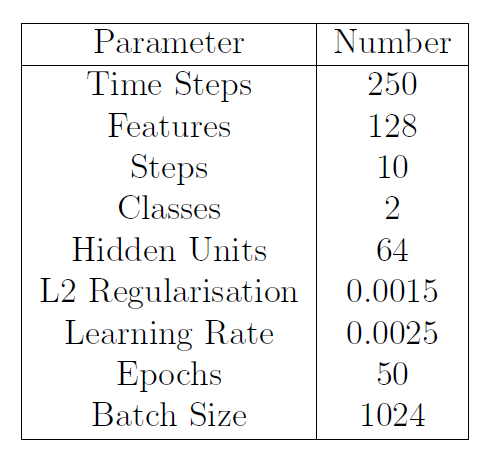
Table 2: LSTM Parameters for Individual Stimulus Data-sets
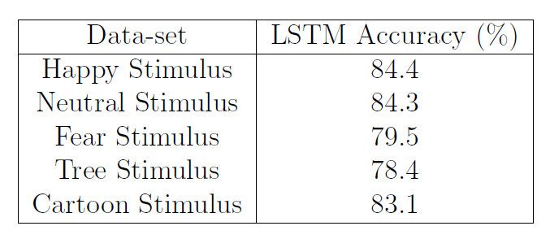
Table 3: LSTM accuracy for Individual Stimulus Data-sets
For the CNN has instead been kept a Train/Test split ratio of 70% against 30% and the model architecture has been slightly modified to best fit the reduced amount of data:
-
Two 2D Convolutional Layers having 32 filters, a kernel size of 5 × 5, a ReLU (rectified linear unit) function and the same padding.
-
A 2D MaxPooling layer of 2 × 2 size.
-
A Dropout layer of 0.2 intensity (in order to avoid over-fitting the data)
-
A layer to first flatten the data from three dimensions to just one, and then another one to condense the input to give to the classifier 128 features (always using the ReLU function).
-
A second Dropout layer of 0.5 intensity.
-
Finally, a Dense layer (of two neurons) to produce the classification result, using a Softmax activation function.
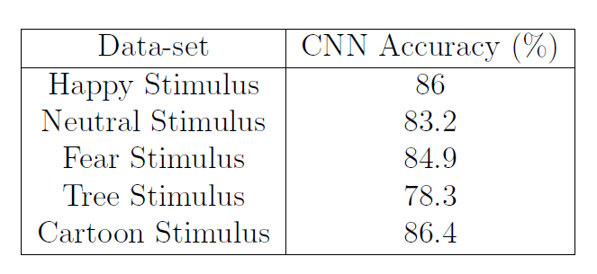
Table 4: CNN accuracy for Individual Stimulus Data-sets
 Figure D.1: PCA classification using Decision Tree
Figure D.1: PCA classification using Decision Tree
Appendix E: Decision Tree Classification
The following graph was realised storing the tree as a .dot file and then using the Graphviz library. For the purposes of space, just the first 48 branches are displayed because the full decision tree is composed by more than 9000 branches.
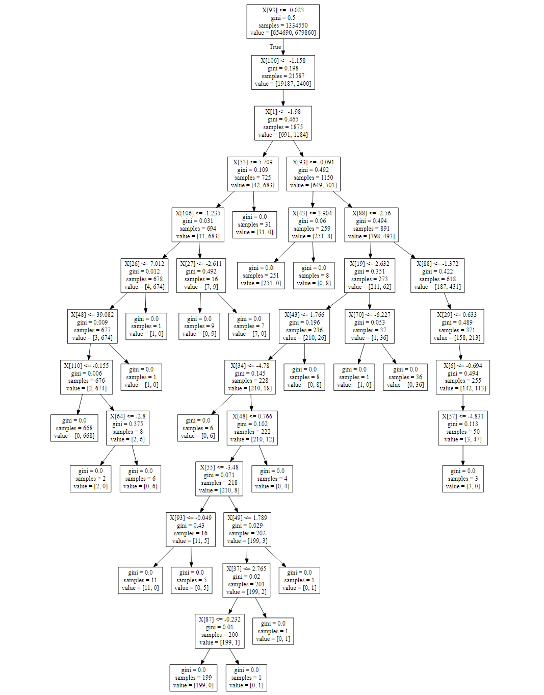Figure E.1: Decision Tree Classification Plot
Appendix F: LSTM Training/Test Loss and Accuracy
 Figure F.1: LSTM Training/Test Loss and Accuracy
Figure F.1: LSTM Training/Test Loss and Accuracy